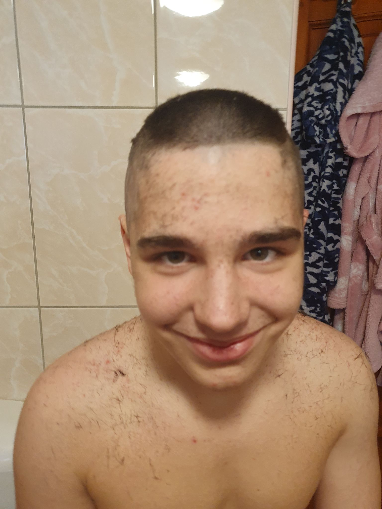

Szolvik Gergő
Testvér, barát & tanuló
A történet középpontjában egy fiatal férfi, Gergő áll, aki hosszú ideje küzdött az alvászavarral. Az éjszakák folyamatosan kihívást jelentettek számára, és az álmatlanság negatív hatással volt mindennapi életére. Egy nap barátai észrevették Péter nehézségeit, és úgy döntöttek, hogy összefognak segítve neki. Gergő barátai egy online közösséget hoztak létre, melynek neve "Ébreszd fel Gergőt!" volt. Az oldalon megosztották Gergő történetét, és elkezdték gyűjteni a pénzt egy olyan kezelésre, amely segíthet a barátjuknak. A közösség hamarosan bővült, és más fiúk is csatlakoztak, akik hasonló kihívásokkal néztek szembe.
Az "Ébreszd fel Gergőt!" közösség rendszeresen osztott meg inspiráló történeteket, hasznos tippeket az alvás minőségének javításához, és szervezett jótékonysági eseményeket a pénzgyűjtés érdekében. Voltak közös sportesemények, virtuális játékversenyek és online találkozók, amelyeken az emberek összefogtak a jó ügy érdekében. A közösség nem csak pénzt gyűjtött, hanem erős barátságok is születtek. Péternek a támogatás és a közösség ereje segítette átvészelni az alvászavarral járó kihívásokat. Az "Ébreszd fel Gergőt!" közösség a fiúk számára biztonságos és támogató hely lett, ahol megoszthatták tapasztalataikat és egymást segíthették.
Milyen jó barát, de most bajban van.
Alvászavar, segíts most!
Hogy segíts gyűjts adományt Gergő részére.

MINDEN TÁMOGATÁST MEGKÖSZÖNÜNK!
Látogatok száma: